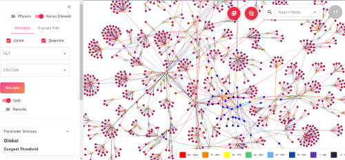
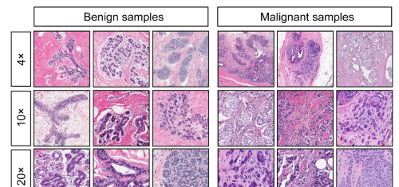
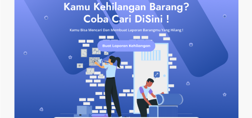
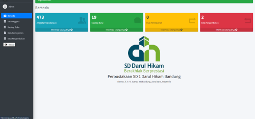

Data Scientist, PT Tech Mayantara Asia
Project-based work, developing machine learning SLI fraud detector for PT Telekomunikasi Indonesia. Built using Python and TPOT as AutoML framework. Responsible for cleaning data, creating dummy data training, feature engineering, data aggregation, and creating pipeline programs.

Network Simulator PT Telkom Indonesia
Network simulator for PT Telekomunikasi Indonesia. Built using Python and Streamlit framework as the interface. Responsible for creating routing paths for each packet, handling error routing paths, and analyzing routing paths in various conditions.

Breast Cancer Predicts
Predict breast cancer datasets with automated machine learning. Create automated machine learning using TPOT. Final result model accuracy is 96%.
Credit Risk Predicts
Predict credit risk datasets with Artificial Neural Network Algorithm using Multi-Layer Perceptron. Create Multi-Layer Perceptron using Tensor Flow. Final result of Multilayer Perceptron accuracy is 90%.

FoundIt!
FoundIt is a website built using the Laravel Framework with HTML, CSS Tailwind as the Front-end, Laravel as the Back-end, and MySQL
as the database. This website is a platform for
reporting lost items. As a back-end developer,
responsible for fetching data from databases to
catalog pages and creating forms for uploading
lost and found reports

E-Library SD Darul Hikam Bandung
A website built using the Laravel Framework with HTML, CSS Bootstrap as the Front-end, Laravel as the Back-end, and MySQL as the databases. This website is for library management that manages book data, loan data, return data, and member data.
As a back-end developer, responsible for creating
back-end for loan data, return data, and
authorization.
.png)